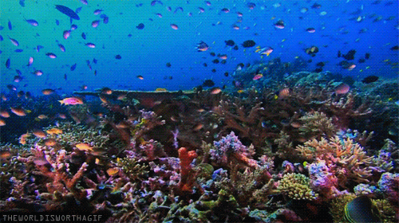

Descubre el Fascinante Mundo de los Peces
Peces Tropicales

Los peces tropicales son conocidos por sus vibrantes colores y formas únicas. Habitan en aguas cálidas alrededor del ecuador terrestre.
Peces de Aguas Profundas

En las profundidades del océano, encontramos criaturas extraordinarias adaptadas a la oscuridad y la presión extrema.
Peces de Arrecife
Los arrecifes de coral albergan una increíble diversidad de peces, desde pequeños peces payaso hasta majestuosos peces ángel.